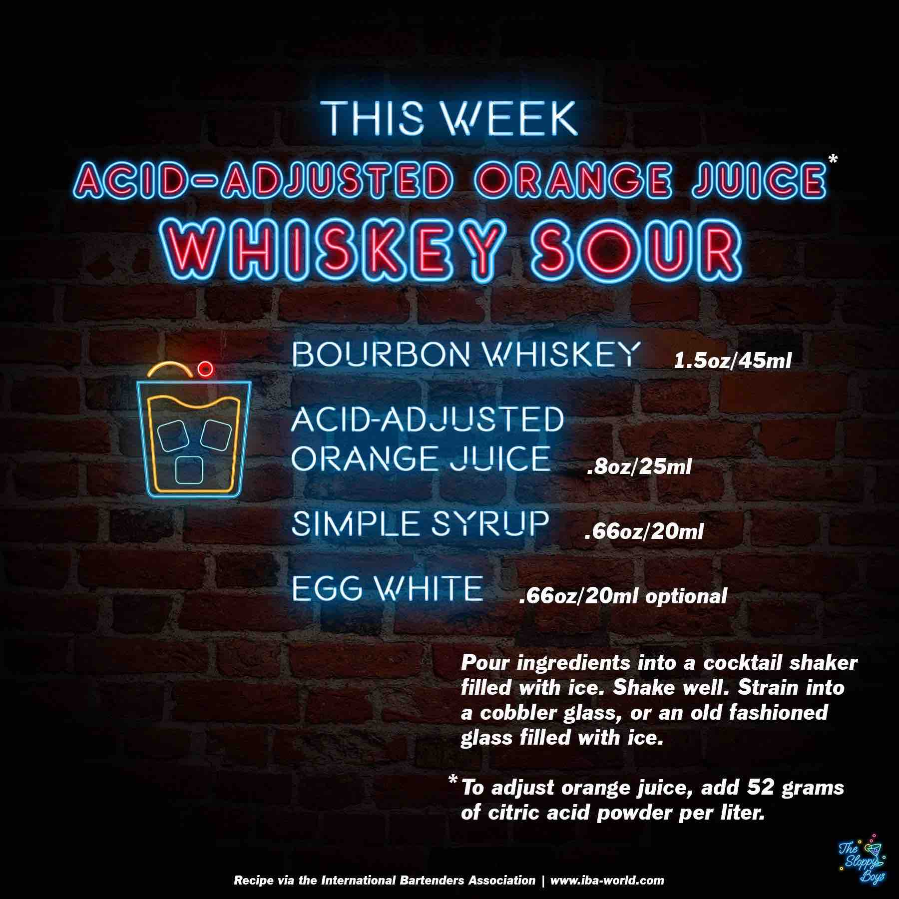

Acid-Adjusted Orange Juice Whiskey Sour
Ingredients
- Bourbon Whiskey (1.5oz/45ml)
- Acid-Adjusted Orange Juice (.8oz/25ml)
- Simple Syrup (.66oz/20ml)
- Egg White (.66oz/20ml)
Steps
- Pour ingredients into a cocktail shaker filled with ice.
- Shake well.
- Strain into a cobbler glass, or an old fashioned glass filled with ice.
- *To adjust orange juice, add 52 grams of citric acid powder per liter.
Notes